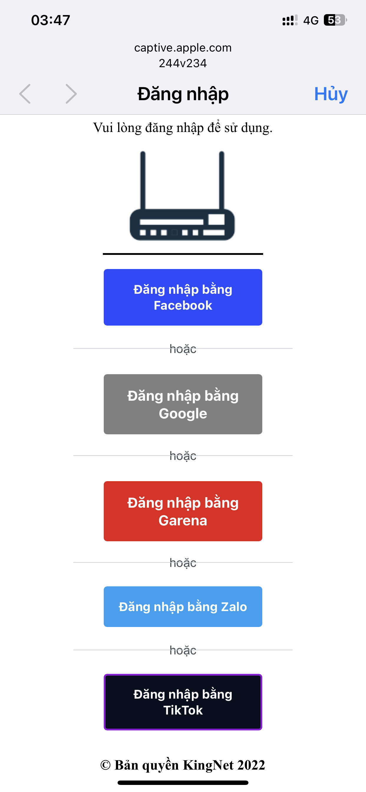
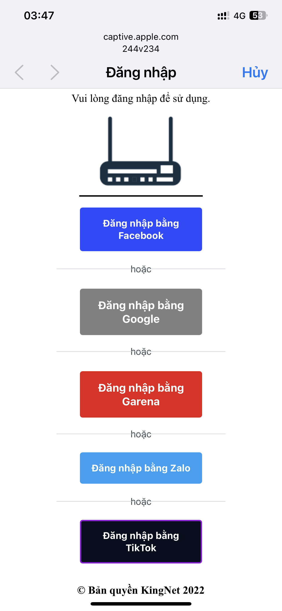

Phiên bản phần mềm 6.6 - Phát hành 11.12.2022
Quý khách có nhu cầu mua hàng vui lòng bấm vào link Shopee.vn/244v234
Giới thiệu
- Thiết bị này là công cụ kiểm tra an ninh mạng wifi nhà bạn và mô phỏng kỹ thuật lừa đảo xã hội.
- Bạn cũng có thể sử dụng thiết bị này để hạn chế những người hàng xóm hát karaoke vô ý thức, gây ảnh hưởng đến học tập, sinh hoạt, cũng như giấc ngủ của bạn và gia đình.
- Ngắt kết nối wifi điện thoại, máy tính bảng của con cháu, để hạn chế các cháu chơi game, lên mạng quá nhiều, xao nhãng học hành.
Các tính năng chính.
Video giới thiệu tính năng ngắt kết nối và l*y mật khẩu wifi
Hướng dẫn sử dụng:
1. Cấp nguồn cho thiết bị bằng sạc dự phòng, hoặc cục sạc điện thoại thông thường.
2. Kết nối với wifi 244v234 do thiết bị phát ra, mật khẩu: abcd1234
3. Sau khi kết nối thành công, mở ứng dụng duyệt web: chrome, safari, firefox,opera...... Sau đó truy cập vào 1.2.3.4(Trong trường hợp bạn truy 1.2.3.4 nhưng không hiện giao diện điều khiển. Vui lòng vào web ở chế độ riêng tư - hay còn gọi là ẩn danh.)

5. Nếu muốn tìm lại các mạng wifi xung quanh, bấm vào “TÌM KIẾM WIFI XUNG QUANH”. Sau đó tích vào các mạng wifi mà bạn muốn "Ngắt kết nối". Sau đó bấm vào mục "Tính Năng"(nếu muốn l*y mật khẩu wifi, bạn chỉ được tích vào 1 mạng duy nhất).

6. Bấm “START” ở tính năng "Ngắt Kết Nối". Lúc này đèn led trên thiết bị sẽ sáng lên. Và những người hát karaoke vô ý thức sẽ bị mất kết nối wifi nhà họ. Sau đó bạn bấm "TẮT WIFI ĐIỀU KHIỂN" để tránh sự nhòm ngó của những người hát karaoke vô ý thức.

7. Nếu bấm "START" ở tính năng "l*y Mật Khẩu", wifi điều khiển 244v234 sẽ biến mất, và sinh ra wifi nhái giống với wifi bạn chọn, để dụ hàng xóm truy cập.
- Nếu hàng xóm không nhập chính xác mật khẩu wifi nhà họ, thì wifi nhà họ sẽ bị ngắt kết nối liên tục.
- Còn nếu hàng xóm nhập chính xác mật khẩu wifi nhà họ, wifi nhái sẽ biến mất. Và lúc này wifi nhà họ sẽ sử dụng được bình thường.
- Nếu bạn muốn xem mật khẩu đã l*y được, bạn rút nguồn ra cắm lại, lúc này wifi điều khiển 244v234 sẽ hiện lên. Bạn truy cập vào giao diện điều khiển, và vào mục "Mật Khẩu Wifi" để xem mật khẩu wifi đã l*y được.
Giao diện l*y mật khẩu Wifi và tài khoản Facebook, Google, Garena, Zalo, TikTok
 

Giao diện l*y tài khoản Facebook, Google, Garena


Giao diện l*y tài khoản Zalo, TikTok, và mật khẩu thu được


Video giới thiệu tính năng l*y tài khoản Facebook và Google
Lưu Ý:
- Bạn nên thử với wifi nhà bạn trước, để hiểu cách thức hoạt động của thiết bị.
- Hướng anten của thiết bị về phía nhà hàng xóm.
- Số âm ở cột sóng càng nhỏ (màu xanh lá), thì modem wifi hàng xóm càng gần với bạn.
- 19h - 22h là thời điểm l*y mật khẩu wifi hiệu quả nhất! Vì thời điểm này nhà hàng xóm có nhiều người đang kết nối wifi.
- Cần tư vấn hoặc hỗ trợ vui lòng nhắn messenger cho mình https://m.me/qcvfvn
Cách phòng tránh:
Vui lòng sử dụng có trách nhiệm, chỉ sử dụng khi thực sự cần thiết!